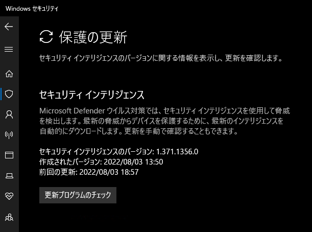

こんにちは Azure Security サポートチームです。
本記事ではMicrosoft Defender ウイルス対策(MDAV)のセキュリティインテリジェンスの更新プログラム(定義ファイル/エンジン)を手動で更新する方法についてご案内いたします。
※ 本記事の内容はWindow 10 21H2環境にて動作を確認いたしております。
本記事の内容
MDAVのセキュリティインテリジェンスについて
MDAVにより端末に最新の脅威からの保護を提供するためには、セキュリティインテリジェンスの更新プログラムと製品の更新プログラムを常に最新に保つことが重要です。
MDAVのセキュリティインテリジェンスの更新プログラムは、2022年8月時点では「KB2267602」にてリリースされております。
また、クラウド保護(MAPS )をご利用中の環境の場合は、「KB2267602」で配信される通常のセキュリティインテリジェンスの更新プログラムに加えて、動的なセキュリティインテリジェンス更新プログラムを取得し、端末に最新の保護を提供します。
本記事では、MDAVのセキュリティインテリジェンスの更新プログラムを手動で更新する方法についてご紹介いたします。
また、トラブルシューティングの目的で、MDAVのセキュリティインテリジェンスおよび動的なセキュリティインテリジェンスを手動でロールバック・削除する方法についてもご紹介いたします。
MDAVのセキュリティインテリジェンスを手動で更新する方法
MDAVのセキュリティインテリジェンスを手動で更新する場合、以下のいずれかの方法が利用できます。
- Windows Update
- Windows セキュリティアプリ
- Power Shell コマンドレット
- MpCmdRun ユーティリティ
- 手動更新パッケージの取得
Windows Updateを使用して更新する
セキュリティインテリジェンスの更新は、通常Window Updateを利用して実施されます。
そのため、Windowの設定アプリを起動し、[更新とセキュリティ]>[Windows Update]の画面から手動でWindows Updateを実行することで、セキュリティインテリジェンスを更新することが可能です。
Windows セキュリティアプリを使用して更新する
Windows セキュリティアプリを開き、[ウイルスと脅威の防止]>[ウイルスと脅威の防止の更新]>[更新プログラムのチェック]を開きます。
ここで、[更新プログラムのチェック]をクリックすることで、セキュリティインテリジェンスの更新プログラムを手動更新することが可能です。

この時に使用されるセキュリティインテリジェンスの更新元は、フォールバック順序の設定によって決定されます。
Power Shell コマンドレットを使用して更新する
Update-MpSignatureコマンドレットを使用することで、Power Shellから手動でセキュリティインテリジェンスの更新を実施することが可能です。
セキュリティインテリジェンスを更新するためには、端末でPower Shellを起動し、以下のコマンドレットを実行します。
1 | PS C:\> Update-MpSignature |
この時に使用されるセキュリティインテリジェンスの更新元は、フォールバック順序の設定によって決定されます。
特定の更新元を指定する場合は、-UpdateSourceオプションを使用します。
以下の例では、Microsoft Malware Protection Center (MMPC)からセキュリティインテリジェンスの更新元として使用します。
1 | PS C:\> Update-MpSignature -UpdateSource "MMPC" |
その他のオプションについてはこちらを参照してください。
MpCmdRun ユーティリティを使用して更新する
コマンドライン ツールMpCmdRun.exeを使用して手動でセキュリティインテリジェンスの更新を実施することができます。
MpCmdRun.exeは、システムの以下のフォルダに存在します。
(使用するためには、管理者権限でPower Shellかコマンドプロンプトを起動する必要があります)
- C:\Program Files\Windows Defender
- C:\ProgramData\Microsoft\Windows Defender\Platform\<最新のプラットフォームバージョン>
MpCmdRun.exeを用いてセキュリティインテリジェンスを手動更新するためには、管理者権限で起動したPower Shellにて以下のコマンドを実行します。
1 | PS C:\Program Files\Windows Defender> .\MpCmdRun.exe -SignatureUpdate |
この時に使用されるセキュリティインテリジェンスの更新元についても、フォールバック順序の設定によって決定されます。
更新元を指定する場合は、
1 | PS C:\Program Files\Windows Defender> .\MpCmdRun.exe -SignatureUpdate |
MpCmdRun.exeの詳細については以下の公開情報をご参照ください。
参考情報：コマンドラインを使用して Microsoft Defender ウイルス対策を管理する
手動更新パッケージを取得して更新する
以下のURLにて公開しているページから、セキュリティインテリジェンスの手動更新用プログラムをダウンロードすることが可能です。
参考情報：セキュリティインテリジェンスの更新
上記のページにアクセスし、[Antimalware solution]の表から、更新対象のプラットフォームに対応したリンクをクリックします。
例：Intel CPU / Windows 10 21h2 の場合は、[Microsoft Defender Antivirus for Windows 11, Windows 10, Windows 8.1, and Windows Server]の行の[64-bit]のリンクをクリックします
ダウンロードしたファイルを右クリックして[管理者として実行]をクリックすることで、バックグラウンドでセキュリティインテリジェンスの更新が完了します。
MDAVのセキュリティインテリジェンスを手動で削除する方法
続いて、トラブルシューティングを目的としてMDAVのセキュリティインテリジェンスをロールバック/削除する方法についてご紹介いたします。
セキュリティインテリジェンスのリストア・削除は、コマンドライン ツールMpCmdRun.exeを使用することで実施することが可能です。
MpCmdRun.exeは、システムの以下のフォルダに存在します。
(使用するためには、管理者権限でPower Shellかコマンドプロンプトを起動する必要があります)
- C:\Program Files\Windows Defender
- C:\ProgramData\Microsoft\Windows Defender\Platform\<最新のプラットフォームバージョン>
参考情報：コマンドラインを使用して Microsoft Defender ウイルス対策を管理する
セキュリティインテリジェンスのロールバック・削除方法
注意：セキュリティインテリジェンスを削除するとMDAVによる保護が提供できなくなりますためご留意ください。
-RemoveDefinitionsオプションを使用してコマンドを実行することで、セキュリティインテリジェンス(定義ファイル/エンジン)を更新前のバージョンにロールバックできます。
1 | PS C:\Program Files\Windows Defender> .\MpCmdRun.exe -RemoveDefinitions |
また、-Allオプションを付与することで、MDAVのセキュリティインテリジェンスを完全に削除することが可能です。
1 | PS C:\Program Files\Windows Defender> .\MpCmdRun.exe -RemoveDefinitions -All |
注意：改ざん防止機能が有効な場合、MDAVのセキュリティインテリジェンスを完全に削除することはできません。
セキュリティインテリジェンスが削除されたことを確認するためには、Power Shellを起動してGet-MpComputerStatus | Select-Object AMEngineVersion,AntivirusSignatureVersionコマンドレットを実行します。
セキュリティインテリジェンスが完全に削除されている場合、0.0.0.0が出力されます。
動的セキュリティインテリジェンスの手動削除方法
コマンドライン ツールMpCmdRun.exeを使用することで、クラウド保護(MAPS )が利用する動的セキュリティインテリジェンスを手動で削除することが可能です。
1 | PS C:\Program Files\Windows Defender> .\MpCmdRun.exe -RemoveDefinitions -DynamicSignatures |
動的セキュリティインテリジェンスが削除されたことを確認するためには、MDAVのイベントログにイベントID:2013のイベントの出力を確認します。
MDAVのイベントログの詳細については以下の公開情報にてご案内いたしております。
参考情報：Microsoft Defender ウイルス対策イベントの ID とエラー コード
また、Power Shellにて以下のコマンドレットを実行することで、動的セキュリティインテリジェンスが最後に削除されたイベントを取得することができます。
1 |
|
まとめ
本記事ではMicrosoft Defender ウイルス対策(MDAV)のセキュリティインテリジェンスの更新プログラム(定義ファイル/エンジン)を手動で更新・ロールバック・削除する方法についてご紹介いたしました。
※ 本情報の内容（添付文書、リンク先などを含む）は、作成日時点でのものであり、予告なく変更される場合がありますことご了承ください。